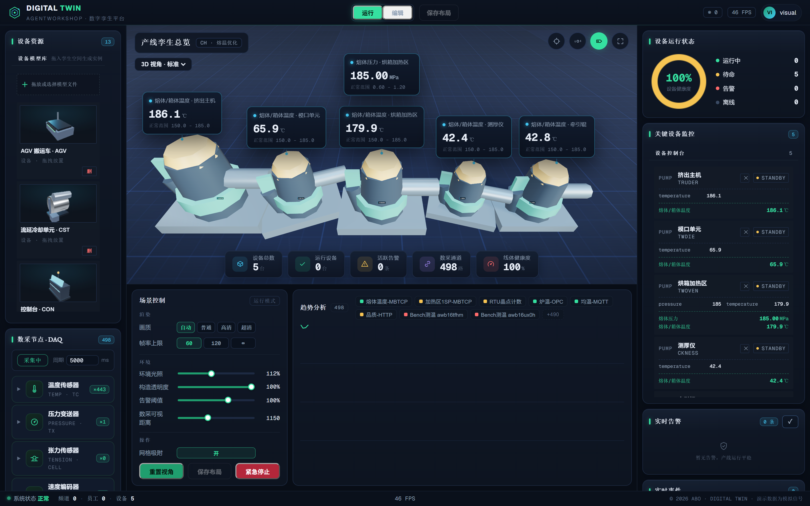
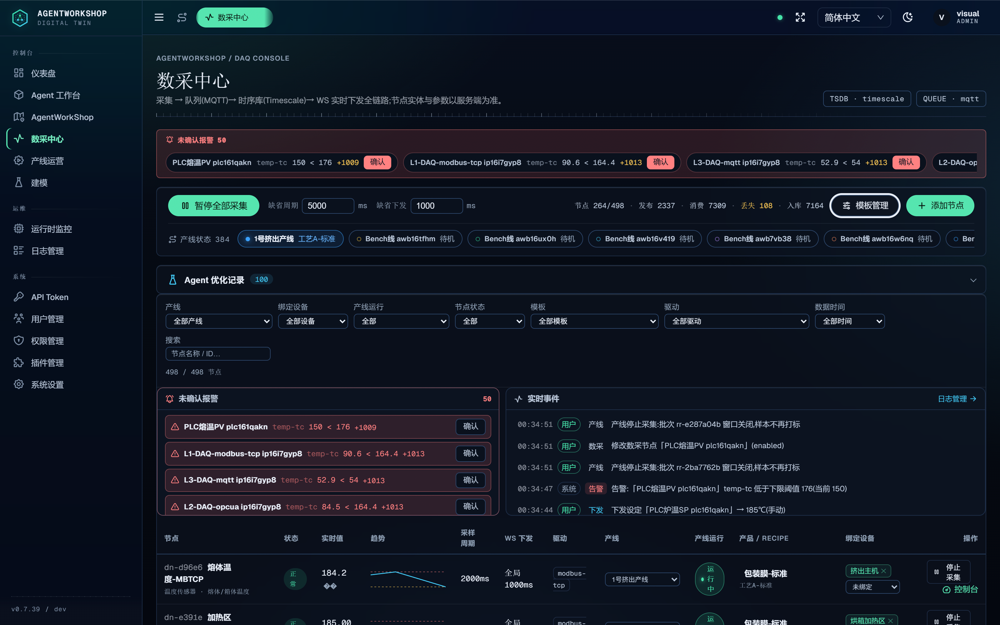

A configuration-driven platform where AI agent teams and an industrial digital twin share one runtime — agents query real telemetry, issue supervisory setpoints through human-approved write control, and every event streams live to a 3D twin.

